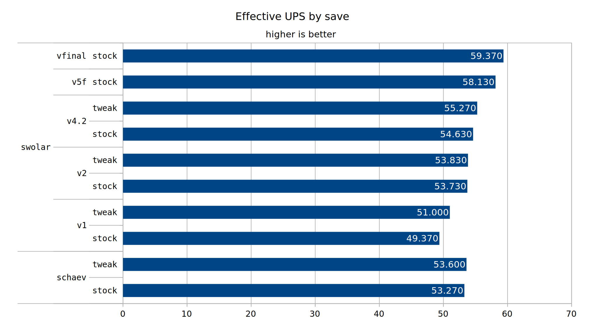

/u/Swolar's base achieves greater perfomance than /u/schaev's, thereby creating a new performance champion in the cheat assisted category.
The first contender is /u/schaev's base. It is a 10k SPM base created with mods (but runnable in vanilla) consisting of trains shuffling ingredients around. It consists of 4 2500 SPM self contained modules. I could try explaining it further, but really you should just read the comments by the engineer here.
I made a tweak to schaev's base to replace the water infrastructure of the map with offshore pumps directly in. I did not go through the effort of rerunning the pipes containing other fluid, but pipes could be reduced from 4 to 3 in quite a few locations.
The second contender is /u/Swolar. He contacted me to show his bot production cell based design. It targets 373SPM per cell, and 27 of these cells will push us to the idealized 10000 SPM. There are severial iterations of this cell, each of which will be tested. For rapid cell scalability to 27x copies, the region-cloner mod was used. Note that maps are reversioned for this test (Swolar's initial cell he showed me was his v3, here renamed v1). Swolar was kind enough to write detailed notes of his progress and reasoning for his various iterations.
The first design was inspired by the idea of reducing the excessive transport of intermediate products that standard bot megabases suffer very much from. By making all science in one place, we can completely cut down on the trains moving intermediate products and shorten total bot travel by a significant amount.
Having all science and intermediates production in one place, opens up the possibility of adjacent direct insertion (DI) through intermediate chests. In this build we can prioritize the recipes with the highest volume of product: copper wire for green circuits and gold science, green circuits for blue circuits and solar panels, iron gears for mining drills and solid fuel for rocket fuel.
A consequence of mixing all production into a big module is that the layout for the assembly machines and chem labs becomes very relevant; a poor layout can reduce UPS performance. The layout for this base was designed taking a greedy approach: placing machines that are ingredient intensive near the trains, and the ones that are product intensive near the machines that consume those.
However, this design requires an efficient dedicated smelter design to be viable. Drawing inspiration from the designs featured in the smelting challenge, we can adapt them to improve space efficiency and beacon sharing, resulting in better UPS and making the designs viable in that they don't require as much ore real state.
mulark -- After seeing Swolar's first cell, I made several changes that I believed would result in higher performance. I cut out military science, and additionally added in proper stone brick and coal sources. I replaced the existing oil's water supply with offshores directly in. I also slightly relocated a few machines to reduce bot travel times.
Even though the initial design greatly exceeded expectations, it could still be improved further. The majority of the bot usage was focused on moving iron and copper plates for green circuits. By doing a DI chest chain off the train, we could further reduce bot usage and improve UPS. The new design required the challenge of using a single station to unload both copper and iron trains; this was solved by using a clock on the stations and creating a train round-robin design that alternated the trains.
The previous smelter design still wasn't quite viable enough, and it required using bots to cover spots where mining drills would not reach the ore patches. To solve this, the smelter was further divided in two, keeping the same total amount of trains and smelter production but halving the required ore area.
mulark -- Like last time, I made several modifications to the cell. Once again I replaced the water infrastructure with offshores directly in. One other major improvement was to reduce the number of beacons on some of the green circuit machines from 12 to 11. This allows the copper cable being di'd to back up, improving the items per swing of the inserters. The number of bots was also slightly reduced.
For this version, a completely new steel smelter was designed by fully taking advantage of direct insertion and removing bots. The build is now fed directly by trains carrying ore, which in turn they pick up through direct insertion from mining drills.
The new steel smelter required us to separate the steel-coal-brick train into two; instead of simply doing that we added more item capacity to the wagons so the base's buffers would last longer, and removed the second trains of these types.
mulark -- Once again I replaced water for offshores. I can't remember if I made any futher tweaks, but at this point the cell was becoming very refined. Or so I thought.
Simulated annealing is a stochastic search algorithm that uses probability to skip out of local optimum. It takes a cost function that "measures" the quality of a solution for any given layout, and iterates randomly through its neighbors until it can't produce one that is better.
Using simulated annealing we can find a better layout that minimizes the cost function. The cost function estimates total bot travel using recipe data and material volumes, accounting for position, distance and even direct insertion on adjacent machines. It also considers minimizing pipe usage which is critical in 0.16, and tries to keep assemblies with low output of the same type adjacent to one another so that they share passive provider chests.
In the layout, costs were assigned as follows: side di was 0.1, vertical di was 0.3, pipe was 200 per "square" in the grid and the cost for not sharing passive chest was 200 per machine. In total, the initial v4.2 design had a sum cost of 360k, while the v5f annealed design achieved a cost of 237k.
Furthermore, we can take the rocket fuel build featured (to be featured?) in test-000007 and adapt it to a bot build, using long handed inserters to share passive provider chests and reducing the amount of solid fuel chest handoffs by one. This frees up room in the base to have an even better layout.
After implementing the AI generated layout, we saw a significant improvement in bot usage (37% reduction in active bots) and total bot travel (35% reduction).
Using the results of tests 000019, 000022 and 000030, we favored the two cheapest train conditions (time passed and inactivity) whenever possible as well as switching to straight rail sections even if it meant longer train paths. Wait conditions were prefixed with a time passed condition when applicable.
Another significant discovery was that using the slower long-handed inserters on the smelter output was more UPS efficient than using the faster stack inserters. The game's function where an inserter looks for items to pick up is more expensive than the function for rotating an inserter to its target; by switching to long handed inserters we do less item pickup checks even if we spend more time in the "swinging" state. -- Will be extensively tested with writeup in the future.
Finally, we added some finishing touches like sharing requester chests whenever possible.
A quick summary of the maps in question:
For all maps except v5f and {Swolar final}, I made a small tweaks version.
Each map here was tested for 50000 ticks, a total of 3 times. Testing was conducted in Factorio version 0.16.51.

This data shows that bots still have a significant ability to compete with trains, at least as far as the test system is concerned.
This data clearly shows the iterative process towards design, as the v1 version of the cell (the one missing stonebrick and coal mind you) is approximately 20% slower than the final iteration.
It was a hard fought victory, but Swolar's cell based design prevailed over schaev's. This new base marks the highest performing vanilla runnable cheat created map. At least, on this hardware.